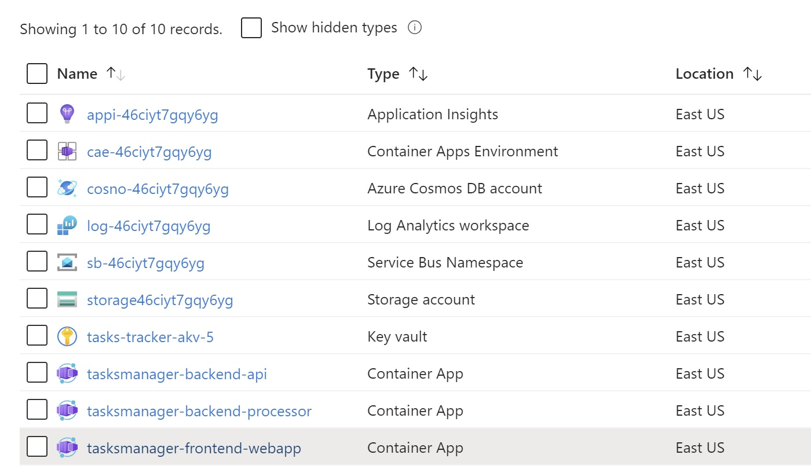

Module 10 - Deployment Via Bicep¶
Module Duration
30 minutes
Throughout the various modules, we have utilized various Azure CLI commands to provision different resources. While this approach is suitable for this workshop, in a production environment, you will likely require a more automated process to deploy the same resources. In this module, we will be working on defining the proper process to automate the infrastructure provisioning by creating the scripts/templates to provision the resources. This process is known as IaC (Infrastructure as Code).
Once we have this in place, IaC deployments will benefit us in key ways such as:
- By ensuring consistency and reducing human errors in resource provisioning, deployments can be made with greater confidence and consistency.
- Avoid configuration drifts as IaC is an idempotent operation, which means it provides the same result each time it’s run.
- With Infrastructure as Code (IaC) in place, recreating an identical environment to the production one becomes a simple task of executing the scripts. This can be particularly useful during the application's lifecycle when short-term isolation is needed for tasks such as penetration testing or load testing.
- The Azure Portal abstracts several processes when you provision resources. For instance, when you create an Azure Container Apps Environment from the portal, it automatically creates a log analytics workspace and associates it with the environment without your direct involvement. However, using Infrastructure as Code (IaC) can provide you with a deeper understanding of Azure and help you troubleshoot any issues that may arise more effectively.
ARM Templates in Azure¶
ARM templates are files that define the infrastructure and configuration for your deployment. The templates use declarative syntax, which lets you state what you intend to deploy without having to write the sequence of programming commands to create it.
Within Azure there are two ways to create IaC. We can either use the JSON ARM templates or Bicep (domain-specific language). As a project grows and the number of components and dependencies increases, working with JSON ARM templates in real-world scenarios can become increasingly complex and difficult to manage and maintain. Bicep provides a more user-friendly and straightforward experience when compared to ARM templates, resulting in increased productivity. However, it's worth noting that Bicep code is eventually compiled into ARM templates through a process called "transpilation."
{kind=link}
Note
For those interested in learning more about Bicep, it is recommended to visit the Microsoft Learn website Fundamentals of Bicep.
Build the Infrastructure as Code Using Bicep¶
To begin, we need to define the Bicep modules that will be required to generate the Infrastructure code. Our goal for this module is to have a freshly created resource group that encompasses all the necessary resources and configurations - such as connection strings, secrets, environment variables, and Dapr components - which we utilized to construct our solution. By the end, we will have a new resource group that includes the following resources. 
{kind=link}
Note
To simplify the execution of the module, we will assume that the azure resource "Azure Container Registry" is already provisioned and it contains the latest images of the three services. If we deployed ACR part of the Bicep scripts, then we can't build and push images to the created ACR in an automated way because creating the three ACA container apps is reliant on ACR's images.
In a production setting, a DevOps pipeline would be in place to automate the whole process - commencing with ACR creation, followed by building and pushing docker images, and concluding with executing the Bicep script to establish the remaining resources. As it is outside the scope of this workshop, we will not delve into the creation of a DevOps pipeline here.
1. Add the Needed Extension to VS Code¶
To proceed, you must install an extension called Bicep. This extension will simplify building Bicep files as it offers IntelliSense, Validation, listing all available resource types, etc..
2. Define an Azure Container Apps Environment¶
Add a new folder named bicep on the root project directory, then add another folder named modules. Add a new file named container-apps-environment.bicep. The content of the file can be found at this location.
What we've added in the Bicep file above
- The module takes multiple parameters, all of which are set to default values. This indicates that if no value is specified, the default value will be utilized.
- The
locationparameter defaults to the location of the container resource group. Bicep has a function calledresourceGroup(), which can be used to retrieve the location. - The parameters
prefixandsuffixcould be used if you want to add a prefix or suffix to the resource names. - The parameter
tagis used to tag the created resources. Tags are key-value pairs that help you identify resources based on settings that are relevant to your organization and deployment. - The parameters
containerAppsEnvironmentName,logAnalyticsWorkspaceName, andapplicationInsightNamehave default values of resource names using the helper function nameduniqueString. This function performs a 64-bit hash of the provided strings to create a unique string. This function is helpful when you need to create a unique name for a resource. We are passing theresourceGroup().idto this function to ensure that if we executed this module on two different resource groups, the generated string will be a global unique name. - This module will create two resources. It will start by creating a
logAnalyticsWorkspace, then anapplicationInsightsresource. Notice how we are setting thelogAnalyticsWorkspace.idas an application insightsWorkspaceResourceId. - Lastly we are creating the
containerAppsEnvironment. Notice how we are setting thedaprAIInstrumentationKeyby using the Application InsightsInstrumentationKeyand then settinglogAnalyticsConfiguration.customerIdandlogAnalyticsConfiguration.sharedKey. - The output of this module are a is parameter named
applicationInsightsName. This output is needed as an input for a subsequent module.
3. Define an Azure Key Vault Resource¶
Add a new file named key-vault.bicep under the folder bicep\modules. The content of the file can be found at this location.
What we've added in the Bicep file above
- This module will create the Azure Key Vault resource which will be used to store secrets.
- The output of this module is a single parameter named
keyVaultId. This output is needed as an input for a subsequent module.
4. Define a Azure Service Bus Resource¶
Add a new file named service-bus.bicep under the folder bicep\modules. The content of the file can be found at this location.
What we've added in the Bicep file above
- This module will create the Azure Service resource, a topic, a subscription for the consumer, and an authorization rule with
Managepermissions. - The output of this module will return three output parameters which will be used as an input for a subsequent module.
5. Define an Azure CosmosDb Resource¶
Add a new file named cosmos-db.bicep under the folder bicep\modules. The content of the file can be found at this location
What we've added in the Bicep file above
- This module will create the Azure CosmosDB account, a CosmosDB database, and a CosmosDB collection.
- The output of this module will return three output parameters which will be used as an input for a subsequent module.
6. Define an Azure Storage Resource¶
Add a new file named storage-account.bicep under the folder bicep\modules. The content of the file can be found at this location
What we've added in the Bicep file above
- This module will create the Azure Storage account, a storage queue service, and a queue.
- The output of this module will be a single output parameter which will be used as an input for a subsequent module.
7. Define Dapr Components¶
Next we will define all dapr components used in the solution in a single bicep module. To accomplish this, add a new file called dapr-components.bicep under the folder bicep\modules. The content of the file can be found at this location
What we've added in the Bicep file above
- This module will be responsible for creating all dapr components used in the solution. It accepts various input parameters needed by the dapr components.
-
Notice how we are using the keyword
existingto obtain a strongly typed reference to the pre-created resource
8. Create Secrets Into Azure Key Vault¶
This module will have the responsibility of generating the secrets and saving them in Azure Key Vault. Additionally, it will establish a role assignment for the backend processor service, specifically of type Azure Role Key Vault Secrets User, which will allow the service to access the Key Vault and retrieve the secrets.
To achieve this, create a new directory called container-apps\secrets within the modules folder, and subsequently, introduce a new file named processor-backend-service-secrets.bicep within the container-apps\secrets folder. The content of the file can be found at this location.
9. Define the Frontend Service Azure Container App¶
We will now begin defining the modules that are necessary for producing the container apps, starting with the Frontend App. To initiate this process, create a new file named webapp-frontend-service.bicep within the modules\container-apps directory. The content of the file can be found at this location.
What we've added in the Bicep file above
- Observe the usage of the
@secureattribute on input parameters that contain confidential information or keys. This attribute may be applied to both string and object parameters that encompass secretive values. By implementing this attribute, Azure will abstain from presenting the parameter values within the deployment logs or on the terminal if you happen to be utilizing Azure CLI. - The output parameters of this module will provide the fully qualified domain name (FQDN) for the frontend container application.
10. Define the Backend Api Service Azure Container App¶
Add a new file named webapi-backend-service.bicep under the folder modules\container-apps. The content of the file can be found at this location.
What we've added in the Bicep file above
-
Notice how we are assigning the Cosmosdb account a read/write access using the
Cosmos DB Built-in Data Contributorrole to the Backend API system assigned identity, by using the code below:resource backendApiService_cosmosdb_role_assignment 'Microsoft.DocumentDB/databaseAccounts/sqlRoleAssignments@2022-08-15' = { name: guid(subscription().id, backendApiService.name, '00000000-0000-0000-0000-000000000002') parent: cosmosDbAccount properties: { principalId: backendApiService.identity.principalId roleDefinitionId: resourceId('Microsoft.DocumentDB/databaseAccounts/sqlRoleDefinitions', cosmosDbAccount.name, '00000000-0000-0000-0000-000000000002')//DocumentDB Data Contributor scope: '${cosmosDbAccount.id}/dbs/${cosmosDbDatabase.name}/colls/${cosmosDbDatabaseCollection.name}' } -
A similar technique was applied when assigning the Azure Service Bus Data Sender role to the Backend API, enabling it to publish messages to Azure Service Bus utilizing the Backend API system-assigned identity. This was accomplished utilizing the following code:
resource backendApiService_sb_role_assignment 'Microsoft.Authorization/roleAssignments@2020-04-01-preview' = { name: guid(resourceGroup().id, backendApiService.name, '69a216fc-b8fb-44d8-bc22-1f3c2cd27a39') properties: { principalId: backendApiService.identity.principalId roleDefinitionId: resourceId('Microsoft.Authorization/roleDefinitions', '69a216fc-b8fb-44d8-bc22-1f3c2cd27a39')//Azure Service Bus Data Sender principalType: 'ServicePrincipal' } scope: serviceBusTopic }
11. Define the Backend Processor Service Azure Container App¶
Add a new file named processor-backend-service.bicep under the folder modules\container-apps. The content of the file can be found at this location.
What we've added in the Bicep file above
- Notice how we are assigning the role
Azure Service Bus Data Receiverto the Backend Processor to be able to consume/read messages from Azure Service Bus Topic using Backend Processor system assigned identity, by using the code below:resource backendProcessorService_sb_role_assignment 'Microsoft.Authorization/roleAssignments@2020-04-01-preview' = { name: guid(resourceGroup().id, backendProcessorServiceName, '4f6d3b9b-027b-4f4c-9142-0e5a2a2247e0') properties: { principalId: backendProcessorService.identity.principalId roleDefinitionId: resourceId('Microsoft.Authorization/roleDefinitions', '4f6d3b9b-027b-4f4c-9142-0e5a2a2247e0') // Azure Service Bus Data Receiver. principalType: 'ServicePrincipal' } scope: serviceBusNamespace } - Within this module, we've invoked the module defined in step 8 which is responsible to create the secrets in Azure Key Vault and assign the role
Azure Role Key Vault Secrets Userto the Backend Processor Service, by using the code below:module backendProcessorKeySecret 'secrets/processor-backend-service-secrets.bicep' = { name: 'backendProcessorKeySecret-${uniqueString(resourceGroup().id)}' params: { keyVaultName: keyVaultName sendGridKeySecretName: sendGridKeySecretName sendGridKeySecretValue: sendGridKeySecretValue externalAzureStorageKeySecretName: externalStorageKeySecretName externalAzureStorageKeySecretValue: storageAccount.listKeys().keys[0].value backendProcessorServicePrincipalId: backendProcessorService.identity.principalId } scope: resourceGroup(keyVaultSubscriptionId, keyVaultResourceGroupName) }
12. Define a Container Module For the Three Container Apps¶
This module will act as a container for the three Container Apps modules defined in the previous three steps. It is optional to create it, but it makes it easier when we invoke all the created modules as you will see in the next step. To create this module add a new file named container-apps.bicep under the folder modules. The content of the file can be found at this location.
13. Define the Main Module For the Solution¶
Finally, we must specify the Main Bicep module that will connect all other modules together. This file will be referenced by the AZ CLI command when producing all resources. To achieve this, add a new file named main.bicep under the bicep directory. The contents of the file can be found at this location.
What we've added in the Bicep file above
-
When calling the module
dapr-components.bicepwe are setting the value of the arraydependsOnto the Container Apps Environment. This is called explicit dependency which aids the Bicep interpreter in comprehending the relationships between components. In this instance, the Container Apps Environment must be provisioned before the Dapr Components to guarantee a successful deployment. -
When calling the module
container-apps.bicep, some of the input params are expecting are referencing another resource, for example consider the input param namedcosmosDbNameand the value used iscosmosDb.outputs.cosmosDbName. This means that the modulecosmos-db.bicepshould be created successfully before creating the container apps module, this called Implicit dependency.
Deploy the Infrastructure and Create the Components¶
With the steps above completed we are ready to deploy all the different resources. We just need to create a parameters file which will simplify the invocation of the main bicep file. To achieve this, right click on file main.bicep and select Generate Parameter File. This will result in creating a file named main.parameters.json similar to the file found here.
To use this file, you need to edit this generated file and provide values for the parameters. You can use the same values provided on the github link. You only need to replace parameter values between the angle brackets <> with values related to your ACR resource and SendGrid.
Start the deployment by calling az deployment group create. To accomplish this, open the PowerShell console and use the content below.
Next create an ACR inside the newly created Resource Group:
az acr create `
--resource-group <your RG name> `
--name <your ACR name>`
--sku Basic `
--admin-enabled true
Note
Once the RG and ACR are created you can check this section which shows the different commands to build and push the images to ACR. Make sure you are at the root project directory when executing the aforementioned commands. Finally run the bicep file against the newly created Resource Group as shown below.
az deployment group create `
--resource-group "<your RG name>" `
--template-file "./bicep/main.bicep" `
--parameters "./bicep/main.parameters.json"
The Azure CLI will take the Bicep module and start creating the deployment in the resource group.
Verify the Final Results¶
Success
Upon successful deployment, you should observe all resources generated within the designated resource group. Additionally, you may navigate to the Deployments section to confirm that the ARM templates have been deployed, which should resemble the image provided below: